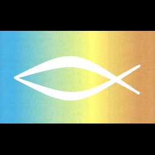

Matthew 18:20 "For where two or three come together in my name, there am I with them."
马太福音18:20 “因为无论在哪里，有两三个人奉我的名聚会，那里就有我在他们中间。”
LightMeeting Studio (来米工坊)
This ongoing project is to develop an internet edge communication software for the Christian Community to have Bible Study and Fellowship online. The main idea is a decentralized Zoom-like meeting of an ultra-light host with a small number of multi-threading clients.
本项目是为基督信众，进行网上读经与团契，而开发的互联网边缘通讯软件。本项目核心思想是去中心化类似Zoom的会议软件，由超轻量主持端电脑与少数多线程客户端组成。
Latest Release: LMS 1.0 (最新版：LMS 1.0)
Help Portal (帮助门户)
Download Now
现在下载中文版

Email 电邮